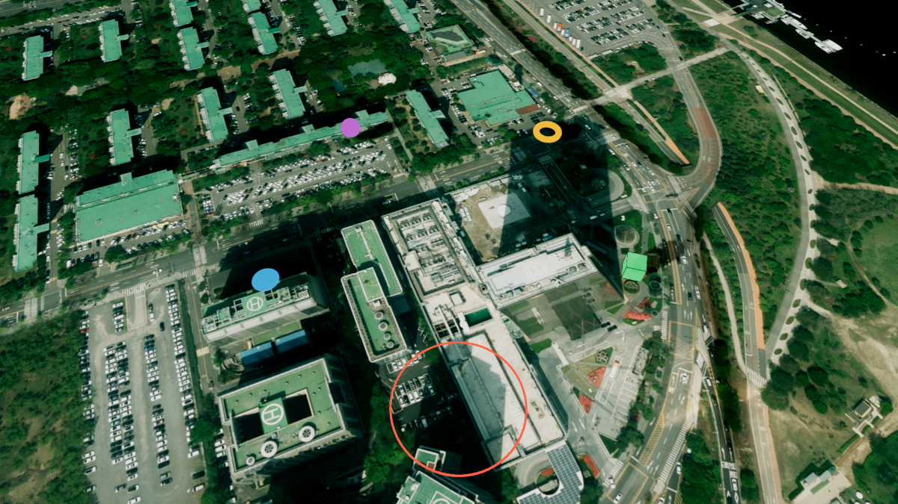
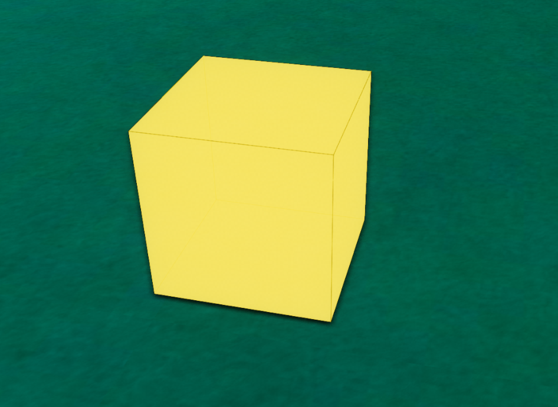
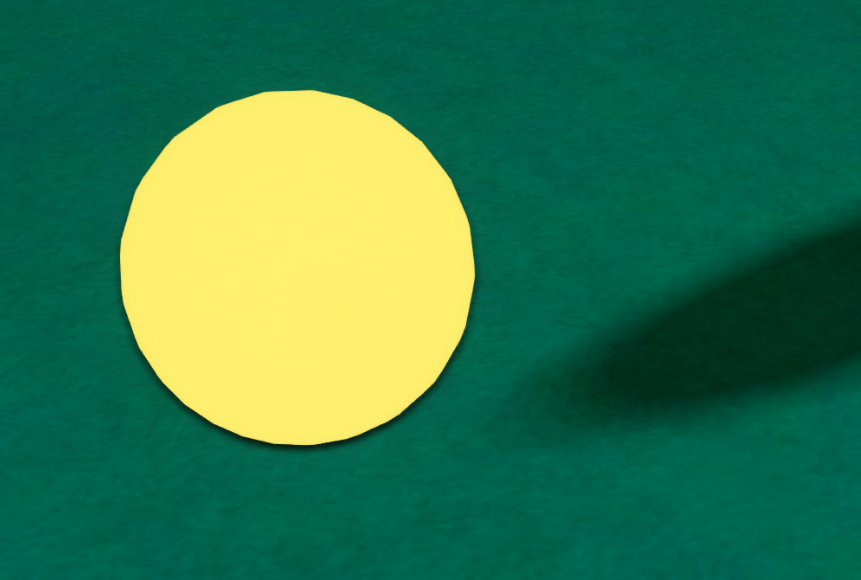
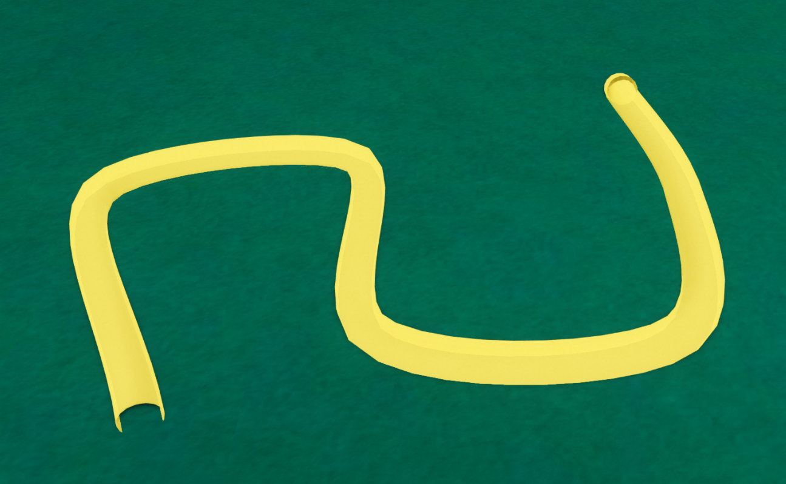
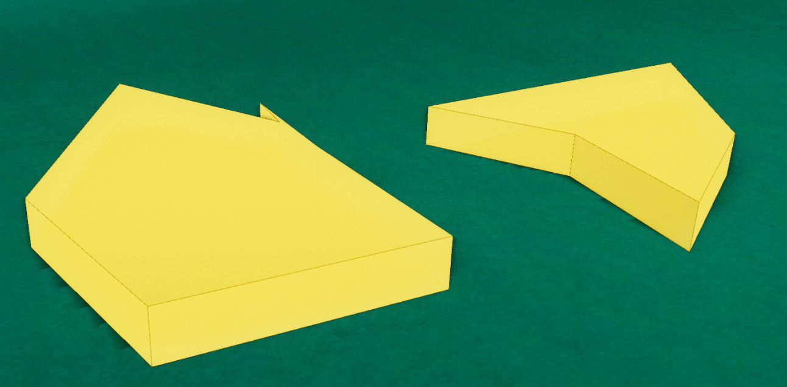

벡터 레이어 (U3dVectorLayer)
목차

U3dVectorLayer는 점·선·육면체 같은 3D 도형을 담아 지도 위에 그리는 레이어입니다.
도형 객체는 스스로 화면에 나타나지 않습니다.
벡터 레이어에 등록해야 화면에 표시됩니다.
한 레이어에 여러 종류의 도형을 함께 담을 수 있고, 가시화·축척·저장·삭제를 레이어 단위로 한 번에 처리합니다.
도형마다 다른 생성 옵션과 좌표 지정 방법은 각 도형의 시작하기 문서에서 설명합니다.
벡터 레이어에 등록할 수 있는 도형은 다음과 같습니다.
GeOnDT.geom.U3dPoint: 3D Geometry 시작하기 - 점 생성하기GeOnDT.geom.U3dLine: 3D Geometry 시작하기 - 선 생성하기GeOnDT.geom.U3dBox: 3D Geometry 시작하기 - Box 생성하기GeOnDT.geom.U3dCircle: 3D Geometry 시작하기 - 원 생성하기GeOnDT.geom.U3dSphere: 3D Geometry 시작하기 - 구체 생성하기GeOnDT.geom.U3dCylinder: 3D Geometry 시작하기 - 원기둥 생성하기GeOnDT.geom.U3dPipe: 3D Geometry 시작하기 - 파이프 생성하기GeOnDT.geom.U3dFlowPipe: 3D Geometry 시작하기 - 흐름 객체 생성하기GeOnDT.geom.U3dUserGeometry: 3D Geometry 시작하기 - 사용자 도형 생성하기GeOnDT.geom.U3dPathGeometry: 3D Geometry 시작하기 - 경로 생성하기
아래는 그중 네 가지 도형의 모양 예시입니다.




1. 벡터 레이어 생성하기
U3dVectorLayer 생성자로 레이어를 만들고, U3dApp.addLayer로 등록한 뒤 U3dApp.showLayer로 화면에 표시합니다.
레이어를 등록하고 가시화한 뒤에 도형을 추가하면 바로 화면에 그려집니다.
showLayer는 표시가 끝난 시점에 완료되는 Promise를 돌려줍니다.
표시 직후에 이어서 처리할 일이 있으면 await로 기다립니다.
name은 지정하지 않으면 자동으로 만들어집니다.app.showLayer와 app.removeLayer가 이름으로 레이어를 찾으므로 직접 지정하는 것을 권장합니다.
API
U3dVectorLayer(opt) : 벡터 레이어를 생성하는 생성자
매개변수
opt(object) : 레이어 생성 옵션opt.name(string) : 레이어 이름. 지정하지 않으면 자동으로 생성됩니다opt.autoHeight(boolean) : 등록한 도형을 지형 표고에 맞춰 올릴지 여부. 기본값:falseopt.defaultZoffset(number) : 자동 높이를 적용할 때 지형 표고에 더할 높이(m). 기본값:0opt.scaleRatio(number) : 도형 높이 축척 비율. 값이 작을수록 높이가 과장됩니다. 기본값:1
API
U3dApp.addLayer(layer) : 레이어를 앱에 등록하는 함수
매개변수
layer(U3dLayer) : 등록할 레이어. 필수
반환값
return(U3dLayer | undefined) : 등록한 레이어 객체. 넘긴 객체를 그대로 돌려주므로 성공 여부 판정에는 쓰지 않습니다
API
U3dApp.showLayer(name, show, deleteCache) : 이름으로 레이어를 찾아 표시하거나 숨기는 함수
매개변수
name(string) : 레이어 이름. 필수show(boolean) : 표시 여부.false면 숨깁니다. 기본값:truedeleteCache(boolean) :true면 레이어가 들고 있던 캐시를 비우고 다시 불러옵니다. 기본값:false
반환값
return(Promise<{result: string, content: U3dLayer}> | false) : 표시(또는 숨김)가 끝난 시점에 완료되는 Promise. 이름이 없거나 지도가 아직 준비되지 않았으면false를 반환하고, 그 이름의 레이어가 없으면 reject 됩니다
1. 레이어 생성 예제
앱을 만든 뒤 벡터 레이어를 등록하고 화면에 표시합니다.
const app = new GeOnDT.U3dAPP({containername: 'map'});
const vectorLayer = new GeOnDT.vector.U3dVectorLayer({
name: 'vector'
});
app.addLayer(vectorLayer); // 앱에 레이어 등록
app.showLayer('vector', true); // 등록한 레이어 가시화
2. 도형 등록하고 제거하기
addGeometry로 도형을 등록하면 레이어가 도형을 관리하기 시작합니다.
도형을 먼저 등록하고 좌표를 지정합니다.
위경도 좌표를 화면 좌표로 변환하는 일은 레이어가 담당하므로, 등록하기 전에 좌표를 지정하면 도형이 원점(0, 0, 0)에 남습니다.
제거 함수는 세 가지이며 목적이 다릅니다.removeGeometry는 도형 하나를 레이어에서 뺍니다.removeAllGeometries는 전체를 빼지만 지오메트리와 재질을 해제하지 않으므로 뺀 도형을 다시 등록해 재사용할 수 있습니다.clear는 전체를 빼면서 자원까지 해제하므로 clear 이후에는 그 도형을 다시 사용할 수 없습니다.
API
U3dVectorLayer.addGeometry(geom) : 도형을 레이어에 등록해 화면에 표시하는 함수
매개변수
geom(U3dGeometry) : 등록할 도형. 필수
API
U3dVectorLayer.removeGeometry(geom) : 도형 하나를 레이어에서 제거하는 함수
매개변수
geom(U3dGeometry) : 제거할 도형. 필수
API
U3dVectorLayer.removeAllGeometries() : 등록된 모든 도형을 제거하는 함수
API
U3dVectorLayer.clear() : 등록된 모든 도형을 제거하고 지오메트리·재질 자원까지 해제하는 함수
1. 도형 등록 예제
육면체를 등록한 뒤 위경도 좌표를 지정합니다.
const box = new GeOnDT.geom.U3dBox({
name: 'box_01',
width: 20,
height: 20,
depth: 20,
color: '#2ecc71'
});
vectorLayer.addGeometry(box); // 1) 레이어에 먼저 등록
box.setPosition(126.9393, 37.5194, 40); // 2) 그 다음 좌표 지정
2. 도형 제거 예제
이름으로 찾은 도형 하나를 빼거나, 레이어를 통째로 비웁니다.
const target = vectorLayer.getGeometryByName('box_01');
if (target) {
vectorLayer.removeGeometry(target); // 도형 하나만 제거
}
vectorLayer.removeAllGeometries(); // 전체 제거 (도형 재사용 가능)
vectorLayer.clear(); // 전체 제거 + 자원 해제 (재사용 불가)
3. 등록된 도형 찾기
등록한 도형은 이름으로 하나만 찾거나 전체 목록으로 받을 수 있습니다.
getGeometries는 순회용 반복자를 반환하므로 for...of에 바로 사용합니다.
배열 메서드를 쓰려면 getGeometryArray를 사용합니다.
getBoundingBox는 등록된 도형 전체를 감싸는 상자를 월드 좌표(EPSG:3857) 기준으로 반환합니다.
등록된 도형이 없으면 비어 있는 Box3를 반환하므로 isEmpty()로 확인한 뒤 사용합니다.
API
U3dVectorLayer.getGeometryByName(name) : 이름으로 도형을 찾는 함수
매개변수
name(string) : 도형 생성 시 지정한 이름. 필수
반환값
return(U3dGeometry | undefined) : 찾은 도형. 같은 이름이 여러 개면 먼저 찾은 하나만 반환하고, 없으면undefined
API
U3dVectorLayer.getGeometries() : 등록된 도형 목록을 반복자로 반환하는 함수
반환값
return(IterableIterator<U3dGeometry>) : 등록된 도형 반복자
API
U3dVectorLayer.getGeometryArray() : 등록된 도형 목록을 배열로 반환하는 함수
반환값
return(Array<U3dGeometry>) : 등록된 도형 배열
API
U3dVectorLayer.getBoundingBox() : 등록된 도형 전체를 감싸는 바운딩박스를 반환하는 함수
반환값
return(Box3) : 월드 좌표(EPSG:3857) 기준 바운딩박스. 등록된 도형이 없으면 비어 있는Box3
1. 도형 목록 다루기 예제
전체 도형을 순회해 색상을 한 번에 바꿉니다.
for (const geom of vectorLayer.getGeometries()) {
geom.setColor('#ff9500');
}
const count = vectorLayer.getGeometryArray().length;
console.log(`등록된 도형 ${count}개`);
2. 전체 영역 확인 예제
바운딩박스의 중심을 계산해 화면을 맞출 위치를 얻습니다.
const box = vectorLayer.getBoundingBox();
if (!box.isEmpty()) {
const center = box.getCenter(new THREE.Vector3());
console.log('중심 월드 좌표', center.x, center.y, center.z);
}
4. 지형 높이에 맞춰 띄우기
도형의 높이(z)는 지형과 무관한 절대 높이입니다.
지형이 높은 지역에서는 도형이 지면 아래로 묻힐 수 있습니다.
setAutoHeight(true)를 호출하면 등록된 도형이 그 지점의 지형 표고 위로 올라가고, 이후 지형 타일이 로드될 때마다 높이가 갱신됩니다.setAutoHeight(false)로 끄면 도형의 원래 높이로 되돌아갑니다.
도형의 좌표를 지정한 뒤에 setAutoHeight(true)를 호출합니다.
좌표가 아직 원점인 도형은 지형을 조회할 위치가 정해지지 않아 자동 높이가 적용되지 않습니다.
지형 위로 얼마나 띄울지는 생성자 옵션 defaultZoffset(m)으로 지정합니다.
이 값은 생성 시에만 적용되며 setAutoHeight로는 바꿀 수 없습니다.
API
U3dVectorLayer.setAutoHeight(value) : 자동 높이 사용 여부를 설정하는 함수
매개변수
value(boolean) : 자동 높이 사용 여부. 필수
API
U3dVectorLayer.getAutoHeight() : 자동 높이 사용 여부를 반환하는 함수
반환값
return(boolean) : 자동 높이 사용 여부
1. 지형 위에 올리는 예제
지형 위 5m 높이로 도형을 띄우는 레이어입니다.
지형 레이어가 등록되어 있어야 지형 표고를 조회할 수 있습니다.
const vectorLayer = new GeOnDT.vector.U3dVectorLayer({
name: 'vector',
defaultZoffset: 5 // 지형 표고 + 5m
});
app.addLayer(vectorLayer);
app.showLayer('vector', true);
const box = new GeOnDT.geom.U3dBox({name: 'box_01', width: 20, height: 20, depth: 20});
vectorLayer.addGeometry(box);
box.setPosition(126.9882, 37.5512, 0); // 좌표를 먼저 지정
vectorLayer.setAutoHeight(true); // 그 다음 자동 높이 적용
지형 타일이 아직 로드되지 않은 위치에서는 높이를 조회할 수 없어 도형이 원래 높이에 남습니다.
해당 지역의 지형이 화면에 표시된 뒤 값이 반영됩니다.
5. 작업 저장하고 불러오기
saveWork는 등록된 도형의 생성 속성을 모아 반환합니다.
반환값을 JSON으로 보관했다가 loadWork로 다시 그릴 수 있습니다.
saveWork는 도형마다 getParam을 호출하므로 getParam이 없는 도형은 저장 대상에서 빠집니다.
저장할 도형이 하나도 없으면 undefined를 반환합니다.
loadWork는 저장 항목을 하나씩 콜백으로 넘깁니다.
도형을 실제로 만들어 레이어에 등록하는 일은 콜백이 담당합니다.
콜백은 {type, param} 형태의 항목 하나를 받고, type은 도형의 클래스 이름입니다.
이미 같은 이름(param.name)의 도형이 있으면 경고를 남기고 그 항목을 건너뜁니다.
대부분의 도형은 getParam에 이름을 담지 않습니다.
저장 데이터에 이름이 없으면 위 중복 검사도 건너뛰므로, 복원한 도형을 이름으로 다시 찾으려면 콜백에서 이름을 직접 지정합니다.
API
U3dVectorLayer.saveWork() : 등록된 도형의 속성을 모아 반환하는 함수
반환값
return(object | undefined) : 저장 데이터. 저장할 도형이 없으면undefinedreturn.geometries(Array<object>) : 도형 목록. 항목마다type(클래스 이름)과param(생성 속성)을 가집니다return.name(string) : 레이어 이름
API
U3dVectorLayer.loadWork(savedData, callback) : 저장 데이터로 도형을 다시 만드는 함수
매개변수
savedData(object | Array<object>) :saveWork가 반환한geometries항목 또는 그 배열. 필수callback(function) : 항목 하나를 받아 도형을 만들고 레이어에 등록하는 함수. 필수
반환값
return(Promise<Array<*>>) : 모든 콜백 처리가 끝나면 완료되는 Promise
1. 저장하고 복원하는 예제
저장 데이터를 JSON 문자열로 보관했다가 그대로 복원합니다.
const saved = vectorLayer.saveWork();
if (saved) {
localStorage.setItem('vectorWork', JSON.stringify(saved));
}
복원할 때는 저장된 type에 맞는 도형을 만들어 레이어에 등록합니다.
const raw = localStorage.getItem('vectorWork');
const saved = raw ? JSON.parse(raw) : undefined;
if (saved) {
await vectorLayer.loadWork(saved.geometries, function (data) {
if (data.type !== 'U3dBox') return;
const box = new GeOnDT.geom.U3dBox(data.param);
vectorLayer.addGeometry(box);
return box;
});
}
2. 저장과 복원 시점 확인하기
saveWork를 호출하면 save 이벤트가, loadWork에서 도형이 하나 만들어질 때마다 load 이벤트가 발생합니다.save 이벤트의 data는 저장한 도형 목록이고, load 이벤트의 data는 {object, save} 형태로 새로 만든 도형과 그 저장 항목을 함께 전달합니다.
vectorLayer.on('save', function (e) {
console.log('저장한 도형 수', e.data.length);
});
vectorLayer.on('load', function (e) {
console.log('복원한 도형', e.data.object.name);
});
6. 레이어 이벤트 등록하고 해제하기
레이어에서 발생하는 이벤트는 on으로 등록하고 off 또는 unkey로 해제합니다.
한 번만 받으려면 once로 등록합니다.
사용할 수 있는 이벤트 이름은 GeOnDT.vector.U3dVectorLayer.EVENT에서 확인합니다.
저장·복원 시점을 알리는 save와 load, 레이어 가시화 상태가 바뀔 때 발생하는 layer-show와 layer-hide를 주로 사용합니다.
해제하려면 등록할 때 쓴 함수나 이름이 필요합니다.
이름 있는 함수로 등록하면 그 함수를 그대로 넘겨 해제할 수 있습니다.
익명 함수로 등록할 때는 네 번째 인자로 이름을 직접 지정합니다.
레이어의 on은 지정한 이름을 그대로 반환하므로, 이름을 넘기지 않으면 나중에 그 리스너만 골라 해제할 수 없습니다.
API
U3dVectorLayer.on(event, callback, once, name) : 이벤트 리스너를 등록하는 함수
매개변수
event(string) : 이벤트 이름. 필수callback(function) : 이벤트 발생 시 실행할 함수. 이벤트 객체를 인자로 받습니다. 필수once(boolean) : 한 번만 실행할지 여부. 기본값:falsename(string) : 리스너 식별 이름. 익명 함수를 해제하려면 지정합니다
반환값
return(string) : 등록에 사용한 리스너 이름. 지정하지 않으면 빈 문자열
API
U3dVectorLayer.once(event, callback, name) : 한 번만 실행되는 이벤트 리스너를 등록하는 함수
매개변수
event(string) : 이벤트 이름. 필수callback(function) : 이벤트 발생 시 한 번 실행할 함수. 필수name(string) : 리스너 식별 이름
API
U3dVectorLayer.off(event, callback) : 이벤트 리스너를 해제하는 함수
매개변수
event(string) : 이벤트 이름. 생략하면 등록된 모든 이벤트를 해제합니다callback(function | string) : 해제할 함수 또는 리스너 이름. 생략하면 해당 이벤트의 리스너를 모두 해제합니다
API
U3dVectorLayer.unkey(event, key) : 이름으로 이벤트 리스너를 해제하는 함수
매개변수
event(string) : 이벤트 이름. 필수key(string) : 해제할 리스너 이름. 필수
1. 이벤트 등록과 해제 예제
이름 있는 함수는 함수를 그대로 넘겨 해제합니다.
function onLoad(e) {
console.log('복원한 도형', e.data.object.name);
}
vectorLayer.on('load', onLoad); // 등록
vectorLayer.once('load', onLoad); // 한 번만 실행할 리스너로 등록
vectorLayer.off('load', onLoad); // 해제
익명 함수는 이름을 지정해 등록하고 그 이름으로 해제합니다.
vectorLayer.on('layer-show', (e) => console.log('레이어 표시'), false, 'showLog');
vectorLayer.unkey('layer-show', 'showLog'); // 이름으로 해제
vectorLayer.off('layer-show', 'showLog'); // off에 이름을 넘겨도 됩니다
레이어를 제거하기 전에는 등록한 리스너를 정리합니다.
vectorLayer.off('load'); // load 이벤트의 리스너 전체 해제
vectorLayer.off(); // 이 레이어에 등록한 모든 이벤트 해제
7. 레이어 표시와 정리하기
레이어를 숨기면 등록된 도형이 함께 사라지고, 다시 표시하면 그대로 되살아납니다.
도형은 유지되므로 숨기기와 표시를 반복해도 다시 만들 필요가 없습니다.
레이어 객체를 들고 있으면 show로 바로 켜고 끕니다.
이름으로 찾아야 하거나 표시가 끝날 때까지 기다려야 하면 1. 벡터 레이어 생성하기의 U3dApp.showLayer를 사용합니다.
setScaleRatio는 등록된 모든 도형의 높이를 한 번에 조절합니다.
도형의 원래 높이를 지정한 값으로 나눈 위치에 배치하므로, 값이 작을수록 높이가 과장됩니다.
지하 단면이나 고도 차이를 강조할 때 사용합니다.
레이어가 더 이상 필요 없으면 clear로 도형 자원을 해제한 뒤 U3dApp.removeLayer로 앱에서 제거합니다.
API
U3dVectorLayer.show(show) : 레이어 가시화 여부를 설정하는 함수
매개변수
show(boolean) : 가시화 여부. 필수
API
U3dVectorLayer.setScaleRatio(val) : 등록된 모든 도형의 높이 축척을 설정하는 함수
매개변수
val(number) : 축척 비율.1이면 원래 높이. 필수
API
U3dApp.removeLayer(name) : 레이어를 찾아 앱에서 제거하는 함수
매개변수
name(string | U3dLayer) : 레이어 이름 또는 레이어 객체. 필수
1. 표시와 축척 예제
vectorLayer.show(false); // 레이어 숨기기 (도형은 유지)
vectorLayer.show(true); // 다시 표시
vectorLayer.setScaleRatio(0.5); // 높이를 2배로 과장
vectorLayer.setScaleRatio(1); // 원래 높이로 복귀
2. 레이어 정리 예제
vectorLayer.clear(); // 도형과 자원 해제
app.removeLayer('vector'); // 앱에서 레이어 제거